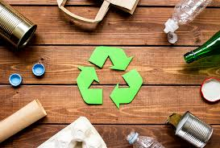

El reciclaje seguro es un proceso de recolección, manejo y transformación de residuos, que busca asegurar que los materiales desechados sean tratados y reutilizados de forma que no pongan en riesgo la salud humana, la seguridad pública ni el medio ambiente. A diferencia del reciclaje tradicional, el reciclaje seguro se enfoca en el manejo correcto de materiales peligrosos, como productos electrónicos, pilas, productos químicos, y plásticos específicos. Estos materiales contienen componentes que pueden liberar toxinas o metales pesados en el ambiente si no son desechados y reciclados de manera adecuada. La implementación del reciclaje seguro requiere de instalaciones especializadas y de prácticas que cumplan con regulaciones ambientales para garantizar la seguridad en todas las etapas del reciclaje, desde la recolección hasta la disposición final. El reciclaje seguro requiere manejar residuos con procedimientos específicos, empaques y transporte seguros en instalaciones especializadas. A su vez, se prioriza la prevención de la contaminación para evitar que productos tóxicos se filtren en el suelo, el agua o el aire, algo que puede ocurrir fácilmente si estos materiales no se tratan adecuadamente.
La importancia del reciclaje seguro radica en su capacidad para reducir el impacto ambiental de los residuos, evitando que sustancias tóxicas contaminen el suelo, el agua y el aire. Muchos productos cotidianos contienen materiales que, si no se tratan adecuadamente, pueden ser dañinos para la salud de las personas y de los ecosistemas. La correcta gestión de residuos evita la quema de materiales, que genera gases tóxicos, y reduce la liberación de contaminantes en el suelo y cuerpos de agua, afectando positivamente la biodiversidad y el equilibrio de los ecosistemas. Por ejemplo, los dispositivos electrónicos contienen plomo, mercurio y cadmio, los cuales son peligrosos para los organismos vivos. Al reciclar estos materiales de manera segura, no solo se evita la contaminación, sino que también se permite la recuperación de materiales valiosos como el cobre, el aluminio y otros metales preciosos, promoviendo así un uso más eficiente de los recursos naturales.
Los beneficios del reciclaje seguro son muchos. Este contribuye a la preservación de los recursos naturales al reducir la necesidad de extraer nuevas materias primas como minerales, madera y petróleo, reutilizando materiales sin comprometer su calidad. Al reciclar de manera segura, los materiales recuperados pueden volver a introducirse en el ciclo de producción, disminuyendo así la explotación de recursos vírgenes. También reduce la huella de carbono y la contaminación ambiental, lo que ayuda a combatir el cambio climático. Reciclando evitas que los productos y materiales se conviertan en residuos, transformándolos en otros completamente nuevos, alargando su vida útil y ayudando a la preservación de los recursos naturales del planeta. Proteger la salud humana es otro beneficio importante del reciclaje seguro, ya que muchos materiales contienen químicos peligrosos que, si se manejan incorrectamente, pueden causar graves problemas de salud., la correcta gestión de residuos evita la quema de materiales, que genera gases tóxicos, y reduce la liberación de contaminantes en el suelo y cuerpos de agua, afectando positivamente la biodiversidad y el equilibrio de los ecosistemas y evitando la exposición a sustancias tóxicas que podrían infiltrarse en el agua potable o en los alimentos. Finalmente, el reciclaje seguro crea oportunidades económicas en el sector de gestión de residuos y reciclaje, generando empleos en industrias sostenibles que apoyan una economía circular, lo que trae beneficios sociales y económicos.